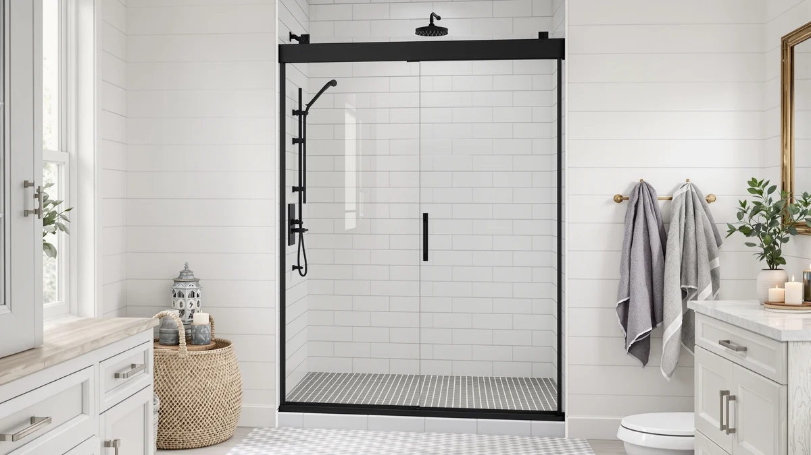

Shower Door vs Curtain Pros and Cons (2026)
Prices and picks verified as of August 2026. Independent, reader-supported reviews.


Things to Know Before You Buy
- Glass shower doors typically run $150 to $600 installed, while a curtain, rod and liner usually cost $20 to $60 total.
- Doors need a professional or a confident DIYer for installation; most curtains go up on a tension rod in under 30 minutes.
- Curtains and liners need washing or replacing every few months to stay mold-free; a properly sealed door needs only periodic track cleaning.
- Renters usually default to curtains, since a door install often means drilling into tile or a wall frame.
- Hard water spots show up faster on glass doors than on fabric or vinyl curtains, so your local water quality matters.
Weighing shower door vs curtain pros and cons is one of the first calls you make when you update a bathroom. It mostly comes down to what you can spend, how much floor space your shower stall has, and how much cleaning and repair time you're willing to put in. A glass door reads as a permanent upgrade and tends to raise the perceived value of a bathroom, while a curtain solves the same water-containment problem in an afternoon and costs a fraction as much.
We compared build quality, typical price ranges, installation difficulty and long-term maintenance for both categories, drawing on verified owner reviews and manufacturer specs rather than physical product trials. Neither option wins across the board. A door earns its higher price with a cleaner look and fewer replacement cycles, while a curtain wins on cost, flexibility and how fast you can swap it out when your taste changes.
Quick Answer
For most bathrooms, a shower door is the better long-term investment if you own your home and can spend $150 or more once. A curtain is the better shower door vs curtain pros and cons pick for renters, small budgets and anyone who wants to change their bathroom's look without touching a drill. Owners who prioritize resale value tend to lean toward doors; owners who prioritize flexibility and low upfront cost tend to lean toward curtains.
What is Shower Door?
A shower door is a fixed glass panel, or set of panels, that encloses a shower stall or bathtub in place of a fabric curtain. Doors come in three common styles: framed, semi-frameless and fully frameless. Framed doors use an aluminum perimeter to hold thinner glass, which keeps the price down but adds visible metal trim that can trap grime. Semi-frameless doors drop the frame around the glass panel itself but keep a track at the top and bottom. Frameless doors use thick tempered glass, typically three-eighths to half an inch, held by minimal hardware, which gives the cleanest look but costs the most.
Doors also split by how they open: sliding doors work well in wider alcove showers where two panels overlap on a track, pivot doors swing on hinges and suit narrower openings, and corner doors wrap around two walls for stall showers. Whatever the style, a shower door creates a rigid, splash-resistant barrier that a curtain cannot fully replicate, though it comes with a fixed footprint you cannot easily change once installed. Retailers sell replacement parts, sweeps, rollers and seals, separately, and they wear out over years of daily use, so a door is a system with ongoing small maintenance rather than a one-time purchase.
What is Curtain Pros And Cons?
A shower curtain is a hanging panel, usually fabric or vinyl, suspended from rings on a straight or curved rod across the opening of a tub or stall. Most setups pair a decorative outer curtain with a separate waterproof liner that does the actual job of keeping water inside the shower; the outer layer is mostly about style. Fabric curtains run from plain cotton or polyester to printed rustic and barn-door designs, and most are machine washable, which matters because liners collect soap scum and mildew faster than glass ever does.
Because curtains have no rigid frame, they flex with airflow and can billow inward during a hot shower, and a thin, low-quality liner sticks to your skin in a steamy bathroom. On the plus side, a curtain rod needs no wall modification beyond two anchor points, so almost any renter can install one without a landlord's approval. When people weigh shower door vs curtain pros and cons, the curtain almost always wins on flexibility: you can swap it for a different pattern or a heavier liner in minutes, something no glass door owner can do without replacing hardware.
Head-to-Head: Build Quality & Durability
Manufacturers build glass shower doors to outlast the fixtures around them. Tempered safety glass, stainless or aluminum hardware and sealed rollers hold up to years of daily opening and closing, and most brands back doors with warranties of one to five years on hardware. The tradeoff is that every moving part, rollers, hinges, sweeps, is a potential failure point, and once a track corrodes or a roller wears out, you replace a specific part rather than the whole unit for a few dollars.
Curtains and liners take the opposite approach: nothing lasts indefinitely, but nothing costs much to replace either. A vinyl liner typically needs swapping every six to twelve months as mildew and soap scum build up, and a fabric curtain lasts one to three years before the fabric thins or the color fades. Reviewers consistently note that heavier, weighted-hem curtains resist billowing and outlast thin, bargain-bin versions. In the shower door vs curtain pros and cons build comparison, doors win on structural durability, and doors that fail usually fail slowly, while curtains fail fast, cheap and often, which for many owners counts as a feature rather than a flaw since replacement takes minutes.
Head-to-Head: Price & Value
Price is where the shower door vs curtain pros and cons debate gets lopsided fast. A basic framed sliding door starts around $150 to $250 installed, semi-frameless models run $300 to $500, and fully frameless custom glass can climb past $800 to $1,200 depending on size and glass thickness. Add professional installation, and you're often paying $100 to $300 in labor on top of the hardware.
A full curtain setup, rod, curtain, liner and rings, typically costs $20 to $60 total, and you can install it yourself with a screwdriver in under half an hour. Even a premium fabric curtain rarely tops $40. Owners report the ongoing cost gap stays wide over time too: a door needs occasional part replacement measured in tens of dollars, while a curtain liner replacement runs $8 to $15 every few months, still cheaper cumulatively than one door repair.
Head-to-Head: Use Experience
Day to day, the shower door vs curtain pros and cons gap shows up most in how a shower feels to use rather than in a spec sheet. A shower door gives you a fixed, splash-contained space that stays dry outside the stall and looks intentional rather than temporary. You don't have to tuck a curtain inside the tub before you turn on the water, and there is no fabric brushing against your skin mid-shower. The tradeoff shows up in cleaning: hard water spots and soap scum streak glass fast, especially in areas with mineral-heavy water, and keeping a door looking clear takes a squeegee habit most owners admit they don't keep up with.
Curtains ask less of your attention in some ways and more in others. You don't need to squeegee glass, but you do need to spread the curtain out after each shower so it dries instead of growing mildew in the folds, and a thin liner sticks to you if the bathroom gets steamy. Reviewers who switched from curtains to doors often mention the change in daily feel first: a door makes the shower feel like a fixed room rather than a stall with a sheet over it, while curtain users highlight how easily they can reach in and adjust water temperature without opening anything.
When to Choose Shower Door
Choose a shower door if you own your home and plan to stay long enough to recoup the upfront cost, since a glass door tends to add to a bathroom's resale appeal more than a curtain does. It also makes sense if your household includes anyone who needs a stable grab point or a barrier that won't move, since a rigid door doesn't billow or catch on a foot mid-step the way a curtain can. Bathrooms with good ventilation are a better fit for glass too, since improved airflow limits the hard-water spotting and soap-scum buildup that make doors look dull between cleanings. If your existing plumbing and tile are in good shape and you're not planning a full remodel soon, a door is usually the better one-time investment over the life of the bathroom.
When to Choose Curtain Pros And Cons
Choose a curtain if you rent, plan to move within a few years, or don't want to commit to a fixed layout. Curtains also make more sense for irregular tub and stall shapes where a custom glass door would cost significantly more to fit properly. If your budget for the whole bathroom update is under $100, a curtain and liner leave money for other fixtures instead of concentrating your spend on one glass panel. Households with small children who need to climb in and out of the tub often prefer curtains too, since there's no glass edge to bump against. And if your taste in bathroom style changes every year or two, swapping a curtain pattern costs nothing close to what re-glazing or replacing a door would.
Our Top Picks
If you've decided which side of the shower door vs curtain pros and cons comparison fits your bathroom, these are solid starting points for either path.

Editor's Pick
Prime-Line M 6211 Shower Door
A low-cost vinyl sweep that reseals the bottom gap on an existing glass door instead of replacing the whole enclosure.
$4.93
Check Price on Amazon
Best Value
Ydbkt Stall Fabric Shower Curtain
A washable stall-size fabric curtain that covers a standard opening for under $15.
$14.99
Check Price on Amazon
Premium Choice
Ydbkt Rustic Shower Curtain Set
A rustic-print curtain set that extends the look beyond the shower stall to the rest of the bathroom.
$15.99
Check Price on AmazonFrequently Asked Questions
Final Verdict
Weighing shower door vs curtain pros and cons comes down to how long you'll stay in the home and how much upfront cost you're willing to absorb. A glass door wins on durability, resale appeal and daily feel, while a curtain wins on price, flexibility and ease of install. If you already have a glass door and only need to stop a leak at the base, a part like the Prime-Line sweep above solves that for under $5 without a full replacement. For everyone still deciding, start with a curtain if your budget or lease says no to drilling, and upgrade to a door once you know you're staying put.